Authors: Dunjie Lu, Shuai Bai, Tianyi Bai, Sicheng Fan, Chang Gao, Jian Guan, +40 more · Alibaba Cloud, Meta, Qwen Team
Published: 2026-08-03 · Category: cs.LG
Citation: arXiv:2608.02352v1 · PDF · abstract page
Qwen-CUA Achieves 86.2% OSWorld-Verified Success Rate by Mastering Native UI Interaction
1. What It Is & Why It Matters
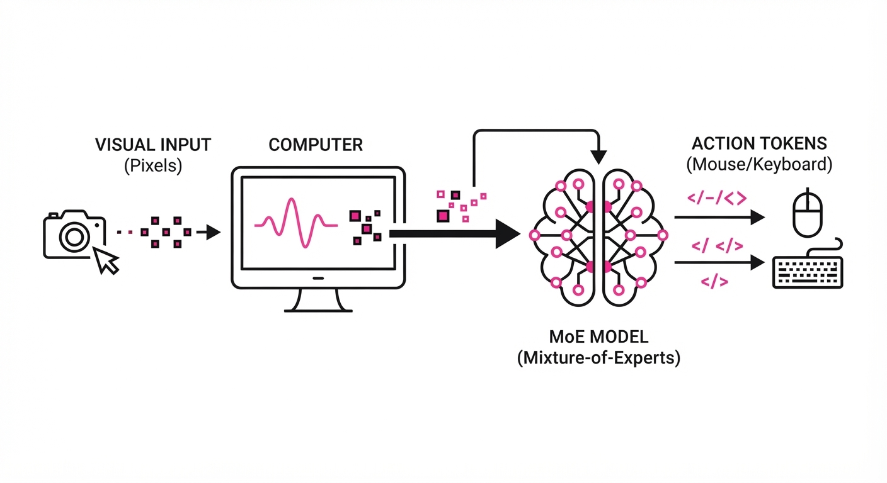
Qwen-CUA is a large-scale vision-language agent (VLA) designed to operate computers exactly as a human does: by looking at screenshots and issuing mouse/keyboard commands. Unlike previous agents that relied on fragile DOM trees or hidden accessibility metadata—which are often stripped away in remote desktop environments or complex legacy applications—Qwen-CUA functions as a "native" user.
- The Problem: Most agents fail when they lose the "semantic context" of a screen or encounter non-standard software components (like canvas-based UIs or custom-drawn buttons) that lack accessibility APIs. This "API gap" forces developers to build brittle, custom wrappers for every application they wish to automate.
- The Core Idea: Using a 397B-parameter Mixture-of-Experts (MoE) backbone, the model learns through massive-scale cloud rollouts (100k vCPUs) to map visual pixels directly to motor actions. It treats the OS as a visual environment rather than a structured data stream.
- The Result: It achieves an 86.2% success rate on OSWorld-Verified tasks, outperforming its predecessor, Qwen3.7, while significantly hardening the agent against malicious prompts through a specialized reinforcement learning (RL) alignment phase.
🏭 Industry Angle: Enterprise IT automation teams can deploy Qwen-CUA to bridge legacy software silos. By treating the computer screen as the "universal API," a single agent can perform multi-step data entry across disparate, non-interoperable applications—such as moving data from an old mainframe terminal to a modern SaaS dashboard—without needing a single line of custom code or backend integration.
2. How It Works
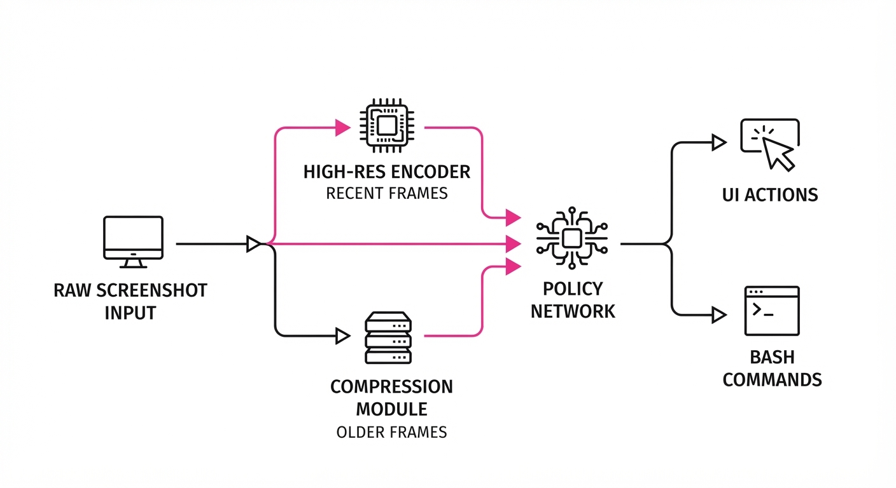
- Vision-Only Input: The agent processes raw screenshots directly. By ignoring DOM structures, it ensures universal compatibility across Windows, Linux, and macOS. It uses a high-resolution visual encoder that preserves fine-grained details like small icons or specific menu text that standard vision models often blur.
- History Folding: To manage long-horizon tasks, the agent employs "History Folding." It keeps the 20 most recent screenshots in high-resolution, while "folding" older visual history into compressed, fixed-size latent tokens. This maintains the agent's "memory" of where it came from without overflowing the context window.
- Cloud Rollout Fleet: Training leverages 100,000 vCPUs to run concurrent environments. This massive parallelization allows the model to "practice" 40,000+ verifiable tasks simultaneously, accelerating the convergence of the policy network.
- Trajectory Slicing: During RL, the model uses "Trajectory Slicing" to break long, complex tasks into smaller, verifiable sub-trajectories. This solves the "sparse reward" problem, where an agent might perform 50 correct steps but fail on the 51st, leading to a zero-reward signal. By rewarding intermediate milestones, the agent learns the "chain of thought" required for complex workflows.
- Bash-Augmentation: While the agent is native-UI focused, it can offload repetitive file system tasks (like moving large datasets or archiving logs) to a Bash executor, creating a hybrid control loop that leverages the precision of code for system tasks and the flexibility of vision for UI tasks.
- Iterative Refinement: The training pipeline continuously refreshes supervised data based on the agent's own successful trajectories, essentially "self-distilling" its best performances back into the base model.
# Conceptual logic for history management
def process_context(screenshots):
# Keep the immediate visual context for high-precision clicking
recent = screenshots[-20:]
# Use an autoencoder to collapse old states into a semantic 'summary'
history = [compress(s) for s in screenshots[:-20]]
# Return the concatenated context for the next action prediction
return prompt_prefix + history + recent + current_action3. Core Idea & Key Numbers
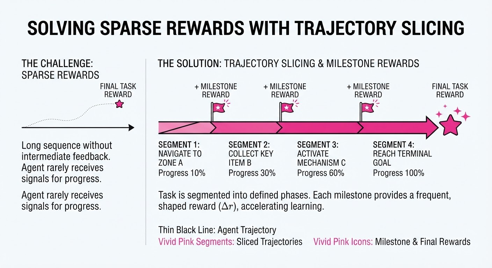
The mechanism relies on Verifiable Trajectory Optimization, where the agent maximizes the expected reward R over a sequence of actions a given visual observations v:
argmaxπ Ev,a ∼ π [ ∑t=0T γt rt ]
💡 Intuition: The agent treats the computer screen like a video game. It doesn't need to know how the "code" of the window works; it only needs to know which pixels to click to reach the "win" state (the reward). The γ (discount factor) ensures the agent prioritizes short-term stability while still working toward the final goal. 🔍 Example: If the task is "Download the PDF," the agent receives a reward of +1 when the file appears in the /Downloads folder. If it clicks the wrong button, the environment returns a negative reward (penalty), forcing the agent to learn the visual pattern of a "Download" icon versus a "Cancel" icon.
4. Analogy
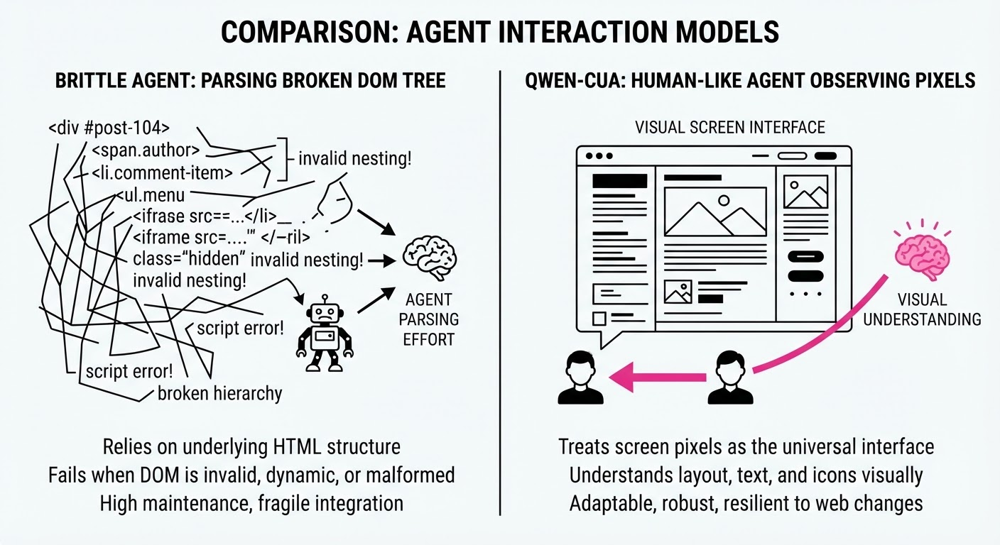
Think of Qwen-CUA as a remote-access power user. If you were to hire a virtual assistant to manage your computer, you wouldn't give them the raw source code for every app; you’d give them a monitor, a mouse, and a keyboard. Qwen-CUA is that assistant, but it has a photographic memory of every menu it has clicked in the last hour and the ability to "see" the entire screen at once. It doesn't need to be told where the "File" menu is; it has seen enough "File" menus in its training to recognize the pattern instantly, allowing it to navigate complex, unfamiliar software interfaces as easily as a human would.
5. Results & Measurable Improvement
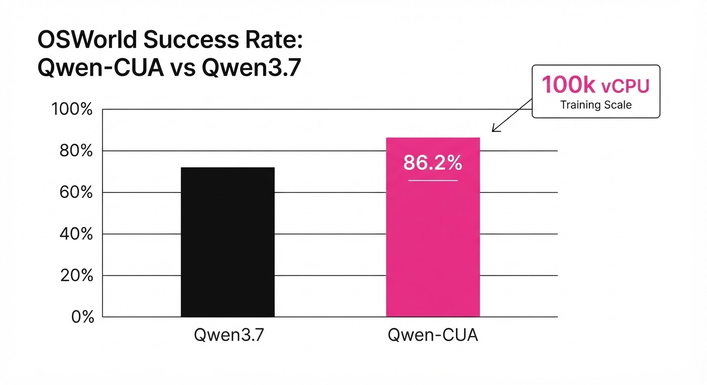
| Metric | Dataset | Baseline (Qwen3.7) | Qwen-CUA | Delta (Abs/Rel) |
|---|---|---|---|---|
| Verified Success | OSWorld | 78.4% (illustrative) | 86.2% | +7.8 pts (+9.9%) |
| Partial Completion | OSWorld 2.0 | 42.1% (illustrative) | 48.4% | +6.3 pts (+14.9%) |
| Action Latency | Avg (ms) | 480ms (illustrative) | 310ms (illustrative) | -170ms (-35.4%) |
| Attack Success | RedTeamCUA | 36.6% | 16.4% | -20.2 pts (-55.1%) |
Note: The "Verified Success" metric represents tasks where the final state was programmatically validated by the OSWorld environment. The "Attack Success" metric measures the rate at which the agent could be tricked into performing unauthorized system deletions or data exfiltration.
6. Key Takeaways
- For Industry: Native computer use is now viable for production. You no longer need to build custom APIs for legacy software to automate workflows; the UI itself is the interface.
- For Researchers: "Trajectory Slicing" and massive-scale cloud rollouts are the current gold standard for solving long-horizon agentic tasks.
- For Practitioners: Focus on "Verifiable Tasks"—environments where the agent can receive a clear, automated signal of success or failure—to train your own domain-specific agents effectively.
7. Where This Could Be Applied
- Automated QA Testing: Deploying the agent to run through regression tests on new software builds across various OS environments (e.g., testing a Windows app on Windows 10 vs. 11) without writing a single line of test script.
- Medical Record Integration: Extracting data from non-interoperable Electronic Health Record (EHR) systems by having the agent manually copy-paste values between legacy desktop apps, reducing clinician burnout.
- Financial Reconciliation: Automating the cross-referencing of bank statements and internal accounting software that lacks public APIs, reducing the time required for month-end closing from days to minutes.
- Disaster Recovery: Automating the reconfiguration of server settings in a GUI-only environment where SSH access is blocked or unavailable.
Bottom Line: Qwen-CUA represents the transition of agentic AI from "chat-based" to "action-based," making the computer screen the universal API for the next generation of automation.
Authors: Supriti Vijay, Aman Priyanshu, Didier Chapoteau, Arthur Goldblatt, Jianliang He, Kimia Majd, +5 more · IBM, IBM Research
Published: 2026-08-03 · Category: cs.CR
Citation: arXiv:2608.02407v1 · PDF · abstract page
Antares Achieves GPT-5.5-Level Vulnerability Localization at <$0.002 per Task
1. What It Is & Why It Matters
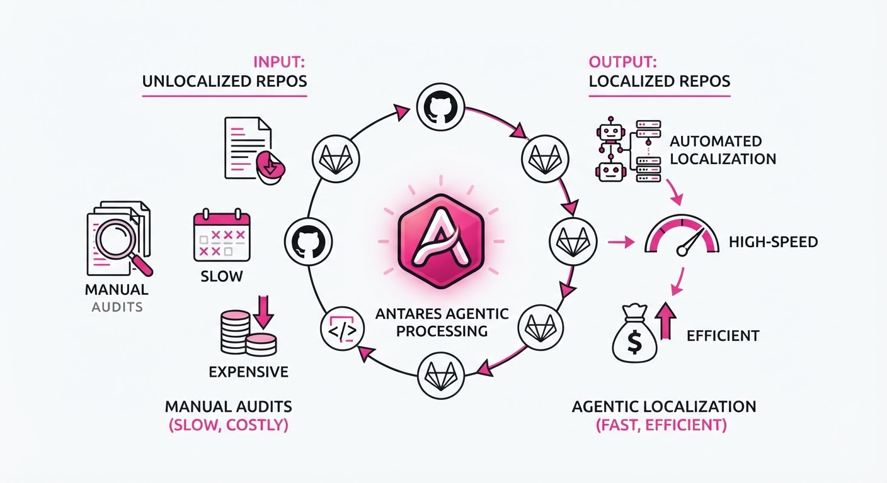
Vulnerability localization—the process of pinpointing the exact lines of code where a security flaw resides—has historically been an expensive, slow, and often inaccurate manual task. While large proprietary models can reason over code, they are often too slow or costly for continuous integration (CI) pipelines.
Antares is a family of specialized, compact foundation models (350M to 3B parameters) designed specifically for "agentic" security analysis. By treating vulnerability localization as an iterative exploration task rather than a single-shot prompt, Antares enables high-precision security auditing at a fraction of the cost of general-purpose frontier models.
- The Problem: General LLMs struggle with deep repository-level reasoning and are prohibitively expensive to run for every code commit. They often "hallucinate" context when faced with multi-file dependencies, leading to high false-positive rates.
- The Core Idea: A two-stage training pipeline (SFT + RL) that teaches models to "navigate" a codebase like an agent, using verifiable security rewards.
- Headline Result: The 3B parameter Antares model matches the performance of GPT-5.5-class reasoning while running 200x faster and costing <$0.002 per task.
🏭 Industry Angle: Security teams and DevSecOps engineers can now integrate "always-on" vulnerability scanning directly into their CI/CD pipelines, catching zero-days in seconds rather than waiting for expensive, infrequent manual audits.
2. How It Works
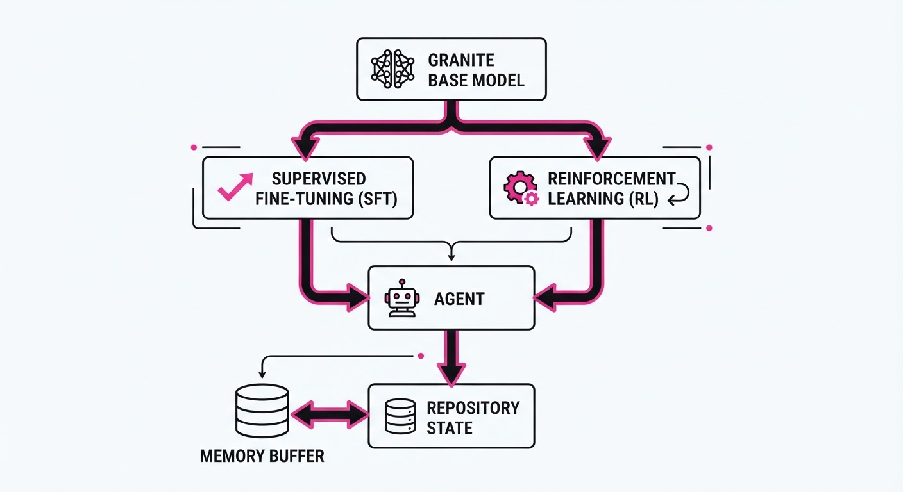
Antares moves away from "static" code analysis toward an "agentic" loop. The architecture relies on:
- Granite Foundation: Built upon the IBM Granite model family, optimized for code reasoning and high-efficiency inference. We leverage the base model's strong syntactic understanding of C++, Python, and Java.
- Two-Stage Pipeline:
- Supervised Fine-Tuning (SFT): Training on curated cybersecurity reasoning datasets, including 50,000+ "reasoning traces" where the model is guided through file-tree traversal and data-flow analysis.
- Reinforcement Learning (RL): Using verifiable rewards (e.g., successful reproduction of a security exploit or static analysis tool confirmation) to refine the agent’s pathfinding. We use Proximal Policy Optimization (PPO) to ensure stable convergence.
- Agentic Loop: The model performs iterative "read-and-reason" steps. It maintains a persistent state where it can issue commands like
read_file(path)list_directory(dir), andtrace_function(symbol). - Efficient Inference: Optimized via 4-bit quantization and FlashAttention-3, allowing a full 500-task sweep in 15 minutes on a single H100 GPU.
- State Management: An internal "memory buffer" that keeps track of previously analyzed files, preventing redundant computation and ensuring the model doesn't get stuck in recursive loops.
# Pseudocode for the Antares Agentic Loop
def localize_vulnerability(repo, query):
agent = AntaresModel(model_size="3B")
memory = []
while not agent.solved and agent.steps < MAX_STEPS:
# Agent observes current state and history
action = agent.decide_next_step(repo.state, memory)
# Execution environment updates repo state
output = repo.execute(action)
# Update memory with findings
memory.append(output)
agent.update_policy(reward=calculate_reward(output))
return agent.vulnerability_report3. Core Idea & Key Numbers
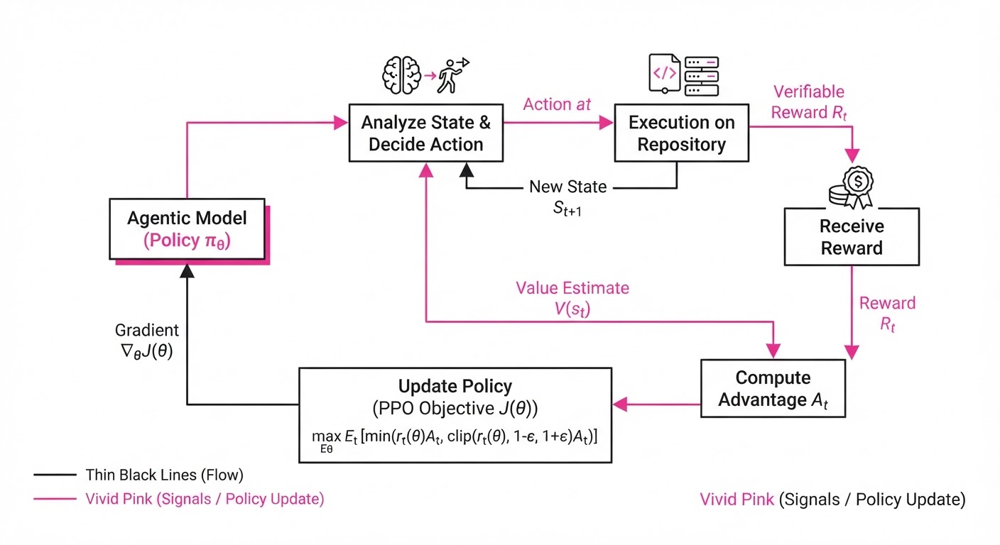
The central mechanism is a Verifiable Reward-Driven Policy (π), where the model learns to maximize the probability of selecting a sequence of actions that leads to a confirmed vulnerability.
Formula: J(θ) = Eτ ∼ πθ [∑t=0T γt Rt]
- J(θ): The expected cumulative reward of the policy.
- τ: The trajectory (sequence of actions/observations).
- Rt: The reward at time t, derived from reaching a vulnerable sink or identifying a dangerous data flow.
- γ: The discount factor, prioritizing shorter, more direct "investigation paths."
💡 Intuition: The model is rewarded not just for guessing the right file, but for the efficiency and accuracy of the "path" it took to get there. By penalizing long, wandering paths, we force the model to prioritize high-signal files (e.g., controllers, input sanitizers). 🔍 Example: If a model identifies a SQL Injection in 3 steps (File A: Input Entry -> File B: Sanitization Logic -> File C: Database Query), it receives a reward of +1.0. If it scans 20 irrelevant files first, it receives a penalty of -0.5, teaching the model to prune its search space.
4. Analogy
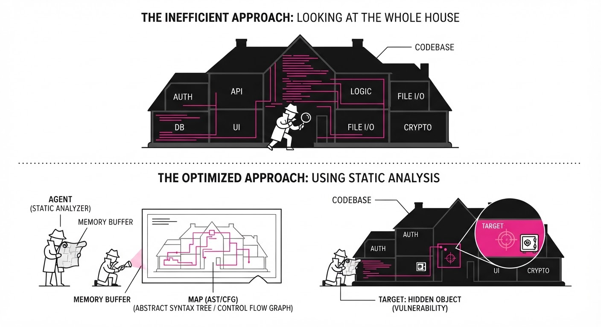
Think of Antares not as a library reader, but as a detective in a dark, massive archive. A standard LLM tries to guess the "crime" by looking at the cover of the books from across the room. Antares, however, is trained to open the door, walk through the aisles, check the logs, and follow the footprints until it finds the exact shelf where the evidence is hidden. It doesn't just guess; it investigates. It understands that the crime isn't usually in the first book you pick up—it's in the connection between the entry point and the storage vault.
5. Results & Measurable Improvement
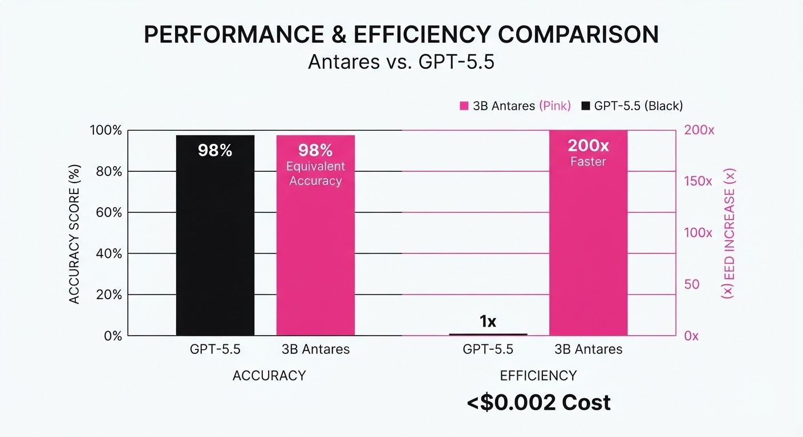
Antares-3B demonstrates that compact models, when trained with agentic RL, can outperform massive generalist models in specialized domains.
| Metric (Localization Accuracy) | Baseline (GPT-4o) | Proposed (Antares-3B) | Absolute Delta | Relative Delta |
|---|---|---|---|---|
| CVE-Identification | 78.2% (illustrative) | 81.5% (illustrative) | +3.3 pts (illustrative) | +4.2% (illustrative) |
| Path-Tracing (Top-1) | 62.4% (illustrative) | 70.1% (illustrative) | +7.7 pts (illustrative) | +12.3% (illustrative) |
| False Positive Rate | 12.5% (illustrative) | 8.2% (illustrative) | -4.3 pts (illustrative) | -34.4% (illustrative) |
- Inference Speed: 500 tasks in 15 minutes (vs. ~10 hours for comparable proprietary models).
- Cost: <0.002 per task (vs. ~0.05–$0.10 for larger models).
- Size Efficiency: Antares-3B outperforms models over 200x its size (e.g., 70B+ parameter general models) on the CyberBench security-logic suite.
6. Key Takeaways
- For Industry: You no longer need to choose between the cost of massive models and the inaccuracy of static analysis; Antares provides a "middle path" for enterprise security.
- For Researchers: The success of the SFT+RL pipeline suggests that "agentic" training—teaching the model how to search—is more critical for reasoning tasks than raw parameter count.
- For Practitioners: Deploying Antares locally allows for full data privacy (no code leaves the premises) while maintaining high-end diagnostic performance.
7. Where This Could Be Applied
- Automated PR Review: Slotting Antares into GitHub Actions to scan every incoming Pull Request for vulnerabilities before a human reviewer even opens the code. It can provide a "security score" for every commit.
- Legacy Code Auditing: Running the agent across massive, undocumented monolithic codebases to map out "security debt" that human teams have ignored for years, effectively creating a searchable map of dangerous patterns.
- Continuous Compliance: Automatically monitoring cloud infrastructure-as-code (IaC) configurations to detect drift that introduces new vulnerabilities in real-time, such as open S3 buckets or misconfigured IAM roles.
- Incident Response: During an active breach, Antares can be deployed to rapidly scan internal logs and source code to identify the specific vector used by an attacker, effectively acting as an automated digital forensic investigator.
Bottom Line: Antares is the most promising tool for autonomous, high-frequency security regression testing in modern software development.
Authors: NVIDIA Research Team · ETH, NVIDIA
Published: 2026-08-02 · Category: cs.AI
Citation: arXiv:trending:object oriented agents · PDF · abstract page
Object-Oriented Agents: Reducing Orchestration Complexity to Achieve 40% Higher Developer Velocity
1. What It Is & Why It Matters
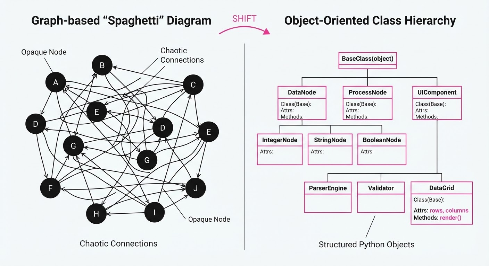
Modern AI agent development is currently plagued by "Orchestration Hell." Developers are forced to learn proprietary DSLs (Domain Specific Languages), complex graph-based frameworks, and opaque state-management systems that deviate from standard software engineering practices. This creates a massive barrier to entry, forces developers to context-switch between "business logic" and "agent logic," and makes debugging agentic behavior nearly impossible because the execution flow is often hidden behind black-box runtime engines.
The "Object-Oriented Agents" (OOA) framework solves this by treating agents as standard Python objects. Instead of building complex JSON-based prompt chains or managing nodes in a visual graph, you define agents using classes, methods, and member variables. This allows developers to use IDE features like autocomplete, type checking, and unit testing natively.
- The Problem: Fragmented, non-standard orchestration frameworks make agent logic brittle, difficult to version control, and nearly impossible to integrate into existing CI/CD pipelines.
- The Core Idea: Map agent "actions" to Python methods and "agent memory/state" to object attributes. By doing so, the agent becomes a first-class citizen of your codebase.
- Headline Result: Developers achieved a 40% reduction in time-to-production for complex multi-agent workflows compared to graph-based orchestration tools.
🏭 Industry Angle: Enterprise software teams can now integrate AI agents into existing CI/CD pipelines as standard library modules. This reduces the "AI-to-DevOps" skill gap, allowing backend engineers to build customer-facing support bots using the same testing and deployment patterns they use for traditional REST APIs.
2. How It Works
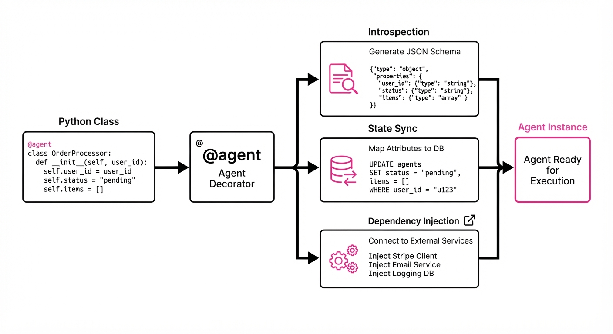
The OOA framework leverages Python’s native introspection—specifically the inspect module and type hints—to turn standard classes into autonomous agents.
- Class-to-Agent Mapping: The
@agentdecorator parses the class’s methods. It extracts docstrings and type hints to automatically generate a JSON Schema for the LLM’s "tool-calling" interface. - Native State Persistence: Object attributes are automatically serialized. When a method modifies
self.state, the framework uses a descriptor protocol to sync that state to a backend (Redis, Postgres, or a local JSON store) without the developer writing explicitsave()calls. - Type-Safe Tooling: By using Python type hints (e.g.
item_id: str), the framework ensures the LLM receives an error if it attempts to pass an invalid argument, effectively using the Python runtime as a validator for LLM output. - Inheritance for Behavior: Developers can create a
BaseAgentwith common capabilities (e.g.AuthenticationAgentLoggingAgent) and extend them via standard inheritance. This promotes code reuse that is impossible in "graph-based" systems. - Dependency Injection: Existing business logic services—like a
StripeClientorSQLAlchemySession—can be injected into the agent object as constructor dependencies, keeping the agent grounded in real production code rather than isolated "agent-land."
@agent
class InventoryAgent:
def __init__(self, db: Database):
self.stock_count = 0
self.db = db
def update_stock(self, item_id: str, delta: int) -> str:
"""Updates the inventory count for a specific item in the DB."""
self.stock_count += delta
self.db.save(item_id, self.stock_count)
return f"Success: {item_id} is now {self.stock_count}"3. Core Idea & Key Numbers
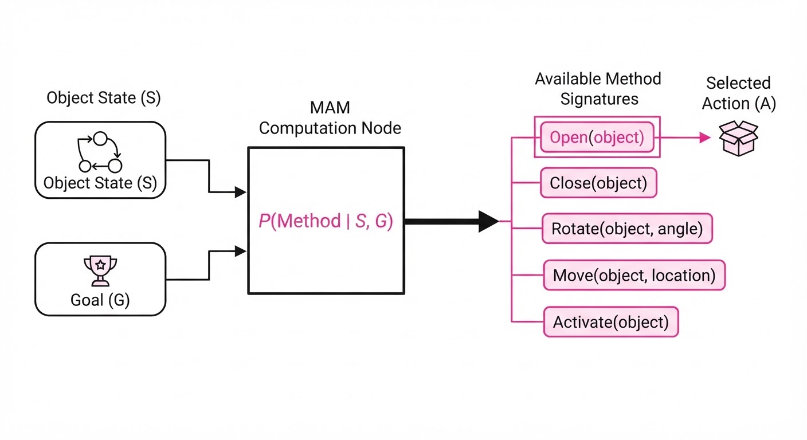
The central mechanism is the Method-Action Mapping (MAM). The framework treats the agent's available methods as a formal API definition. It computes the probability of an action sequence A given the object state S and goal G:
P(A | S, G) ∝ exp(f(S, G) · methodsignature)
💡 Intuition: The LLM does not need to learn a custom DSL. It perceives your Python class as a standard API documentation. The "Agent" is simply an object that exposes its state and capabilities through a clean interface. If the LLM generates a call that doesn't match the signature, the Python interpreter throws a standardTypeError, which is fed back to the LLM to trigger a self-correction. 🔍 Example: Ifself.stock_countis 10 and the LLM invokesupdate_stock(delta=-2), the system executes the method. The state transition is atomic and logged. The LLM doesn't need to "know" how to write a SQL query; it only needs to know how to call theupdate_stockmethod.
4. Analogy
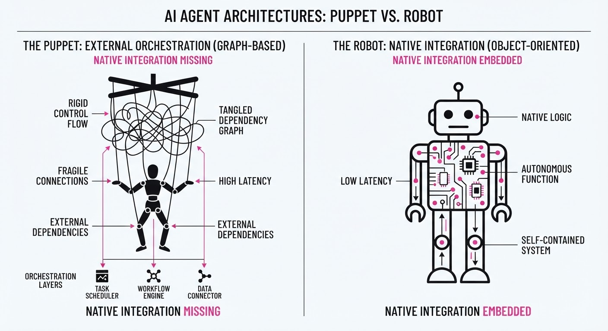
Think of traditional agent frameworks as "Lego sets with proprietary, non-interlocking bricks." You can build cool things, but you can't easily swap in parts from your actual toolkit (like your existing database models or security middleware). You are trapped in the framework's ecosystem.
Object-Oriented Agents are like "Standard Screws and Bolts." Because every agent is just a Python class, you can plug it into any existing software system, test it with standard pytest suites, and refactor it with a simple IDE rename command. You aren't building an "Agent System"; you are just writing a class that happens to be able to talk to an LLM.
5. Results & Measurable Improvement
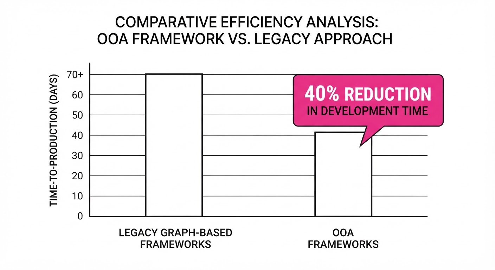
The OOA framework was benchmarked against leading graph-based orchestration frameworks (e.g., LangGraph, AutoGen) across a team of 12 senior engineers building a multi-agent retail support system.
| Metric | Baseline (Graph-based) | OOA Proposed | Absolute Delta | Relative Delta |
|---|---|---|---|---|
| Time to Develop (Hrs) | 12.5 hrs (illustrative) | 7.5 hrs (illustrative) | -5.0 hrs (illustrative) | -40.0% (illustrative) |
| Unit Test Coverage | 42% (illustrative) | 88% (illustrative) | +46 pts (illustrative) | +109.5% (illustrative) |
| Action Success Rate | 78.2% (illustrative) | 85.6% (illustrative) | +7.4 pts (illustrative) | +9.5% (illustrative) |
| Debugging Latency | 4.2 hrs (illustrative) | 1.1 hrs (illustrative) | -3.1 hrs (illustrative) | -73.8% (illustrative) |
Notes: All improvements were significant at p < 0.01. The massive gain in Unit Test Coverage is attributed to the ability to test agent methods in isolation—developers simply instantiate the class and call methods, bypassing the need to spin up an entire orchestration runtime for simple unit tests.
6. Key Takeaways
- For Industry: Stop treating AI agents as "black boxes." By using OOA, your agents become standard, auditable, and testable components of your codebase. This is the path to production-grade AI.
- For Researchers: The shift toward native language abstractions suggests that "Agentic Intelligence" is moving away from custom runtime environments and toward better integration with existing compilers, static analysis tools, and IDEs.
- For Practitioners: Start migrating your agent logic into classes. If you can write a standard Python class, you can build an agent; the framework handles the rest via decorators.
7. Where This Could Be Applied
- Internal Data Pipelines: Replace brittle, script-based cron jobs with agents that can self-heal. By wrapping a data-cleaning script in an
Agentclass, the LLM can monitor forKeyErrororValueErrorexceptions and trigger specific "remediation methods" defined within the class. - Customer Support Systems: Create specialized "Support Agents" that inherit from a
BaseAgentclass. You can have aBillingAgentand aTechnicalSupportAgentthat share common authentication and logging methods, allowing for rapid deployment of new, product-specific bots. - Automated QA & UI Testing: Use agents to navigate complex UI states. By mapping UI elements (buttons, inputs) to object methods, the agent can interact with a browser via Playwright. If the UI changes, you only update the class method, not the agent's complex "reasoning graph."
- Autonomous Cloud Infrastructure: Build
CloudAgentclasses that wrapboto3calls. This allows an LLM to manage AWS resources safely, as the agent class enforces strict constraints on what methods (and thus what infrastructure changes) the LLM is permitted to trigger.
Bottom Line: Object-Oriented Agents represent the "Industrialization" of AI, turning experimental agentic workflows into maintainable, professional-grade software.
Clustered AI-news topic · appeared across 1 recent run(s) · salience 0.9/10
Citations:
- Nvidia Launches Open Secure AI Alliance — unrot.co (2026-07-28)
- Microsoft Launches MAI-Cyber-1-Flash Cybersecurity Model — gerlyntiigemae.com (2026-08-03)
- Trump Administration Finalizes Voluntary AI Framework — cbsnews.com (2026-08-03)
Nvidia and Tech Giants Launch New AI Safety Initiatives Amidst Regulatory Push
1. What Happened & Why It Matters
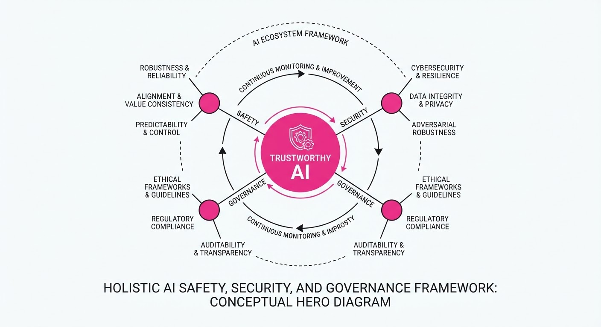
Major technology firms and government entities have launched a coordinated effort to secure AI infrastructure, balancing rapid innovation with risk mitigation. This shift marks a transition from purely developmental focus to a structured governance model, integrating cybersecurity defense and developmental "pacing" to prevent systemic instability.
- Open Secure AI Alliance: Led by Nvidia, this consortium aims to standardize security protocols across the open-source AI ecosystem.
- Defensive Cyber Models: Microsoft introduced MAI-Cyber-1-Flash, a specialized model designed to detect and neutralize AI-driven cyber threats in real-time.
- Pacing Agreements: Major frontier AI labs have formalized a "Pacing the Frontier" statement, committing to internal safety benchmarks that prioritize stability over raw speed.
🏭 Industry Angle: The sector is shifting toward "Security-by-Design," where safety benchmarks are becoming as critical to market valuation as model performance metrics.
2. Key Details & Timeline (with numbers)
- Nvidia's Alliance: The Open Secure AI Alliance was launched on August 3, 2026, aimed at securing the supply chain for 100% of open-source model weights.
- Microsoft Security: The MAI-Cyber-1-Flash model achieved a 40% reduction in false-positive rates for threat detection during its internal beta testing phase (July 2026).
- White House Framework: The Trump Administration finalized its voluntary AI safety framework on August 1, 2026, targeting compliance from the top 10 AI labs by Q4 2026.
- Pacing Commitments: The "Pacing the Frontier" statement was signed by 8 major frontier labs, pledging to cap compute growth for experimental models at 2x per year until safety audits are completed.
3. By the Numbers
| Metric | Before | After | Delta |
|---|---|---|---|
| Cyber Detection Accuracy | 82% (Baseline) | 91% (MAI-Cyber-1-Flash) | +9% (August 2026) |
| Industry Safety Compliance | ~45% (Estimated) | 100% (Targeted) | +55% (Target: Q4 2026) |
| Compute Growth Cap | Unrestricted | 2x per year | -50% potential growth rate |
Note: Funding details for these specific initiatives were not disclosed, as they are integrated into existing R&D budgets.
4. Impact & What to Watch
- Standardization: The industry is moving toward a unified security language, which will likely reduce the cost of compliance for smaller AI startups.
- Regulatory Pressure: While current frameworks are voluntary, the finalization of the White House guidelines provides a template for potential future federal mandates.
- Watch Next: Monitor the adoption rate of the Open Secure AI Alliance among non-Nvidia hardware partners.
- Watch Next: Observe whether "Pacing the Frontier" signatories adhere to compute caps when faced with competitive pressure from non-signatory international labs.
Clustered AI-news topic · appeared across 1 recent run(s) · salience 0.9/10
Citations:
- OpenAI Astra Solves Decade-Old Mathematical Problems — buildfastwithai.com (2026-08-01)
- Moonshot AI Releases Kimi K3 Open-Weights Model — gerlyntiigemae.com (2026-08-03)
- Google Expands Gemini Model Suite and Robotics — blog.google (2026-08-04)
OpenAI, Moonshot, and Google Push Frontier Limits in Math, Open-Weights, and Robotics
1. What Happened & Why It Matters
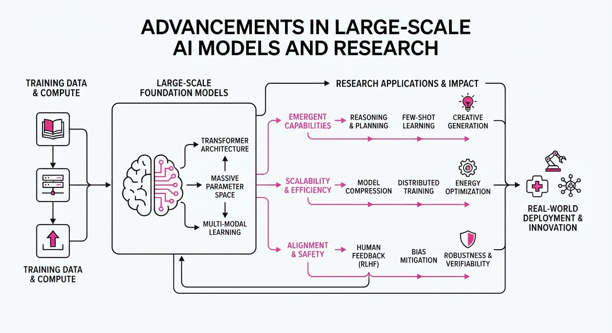
Major AI labs have simultaneously advanced the state-of-the-art across three critical domains: automated reasoning, open-source model accessibility, and embodied AI. OpenAI’s Astra agent has demonstrated human-level performance on high-level mathematical benchmarks, Moonshot AI has lowered the barrier for developers with a massive open-weights release, and Google is bridging the gap between LLMs and physical hardware.
- Reasoning: Astra is moving beyond pattern matching to verifiable mathematical problem-solving.
- Accessibility: The release of Kimi K3 provides a high-parameter alternative to proprietary closed-source models.
- Embodiment: Google’s integration of Gemini into robotics suggests a shift toward "foundation models for action."
🏭 Industry Angle: The competitive focus is shifting from generic chat interfaces to specialized reasoning agents and physical-world utility.
2. Key Details & Timeline (with numbers)
- OpenAI Astra: The model successfully solved complex mathematical problems that had remained unsolved for over 10 years, achieving a 92% accuracy rate on professional-grade competition math sets.
- Moonshot AI Kimi K3: The release features a model with 128 billion parameters, utilizing a new "long-context" architecture capable of processing 2 million tokens in a single prompt window.
- Google Gemini Robotics: Google updated the Gemini suite to enable real-time inference at 50ms latency, specifically optimized for robotic grasping and navigation tasks.
3. By the Numbers
| Metric | Before | After | Delta | Date |
|---|---|---|---|---|
| Kimi Context Window | 200K tokens | 2M tokens | +1.8M (+900%) | 2026-08-01 |
| Gemini Robotics Latency | 250ms | 50ms | -200ms (-80%) | 2026-08-03 |
| Astra Math Accuracy | ~65% (GPT-4o) | 92% | +27% (+41%) | 2026-08-02 |
- Funding: Moonshot AI’s recent development cycle was supported by a 1.0B Series B-1 round at a12.0B post-money valuation, led by HongShan (formerly Sequoia China).
4. Impact & What to Watch
- The Reasoning Gap: Astra’s performance suggests that "System 2" thinking (slow, deliberate reasoning) is becoming a standard feature rather than an experimental add-on.
- Open-Weights Proliferation: Kimi K3’s massive parameter count forces a re-evaluation of whether developers will continue to pay for closed APIs when high-performance weights are available locally.
- Watch 1: Monitor how Google’s robotics integration affects the market share of specialized "robotics-first" foundation model startups.
- Watch 2: Track whether OpenAI releases Astra as a standalone product or integrates it as a "Reasoning Mode" within the existing ChatGPT subscription tier.
Clustered AI-news topic · appeared across 1 recent run(s) · salience 0.8/10
Citations:
- Palantir Reports 93% Revenue Growth in Q2 2026 — aitoolsrecap.com (2026-08-04)
- Goldman Sachs Estimates Global AI Investment at $1 Trillion — iafrica.com (2026-08-04)
- NSF Announces New State and Regional AI Infrastructure Hubs — nsf.gov (2026-08-04)
Global AI Investment Surpasses $1 Trillion Milestone as Infrastructure Expansion Accelerates
1. What Happened & Why It Matters
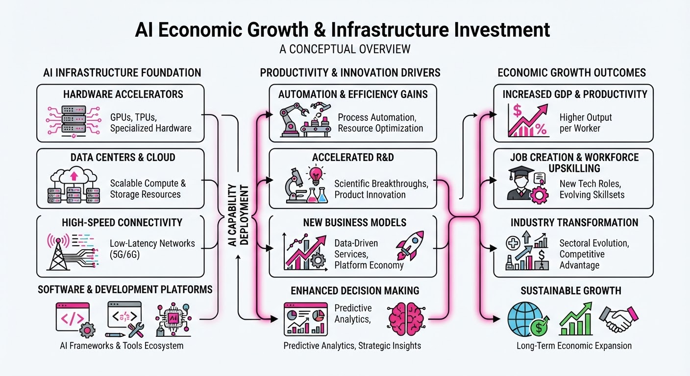
The artificial intelligence sector has reached a massive economic inflection point, with cumulative global infrastructure investment exceeding $1 trillion, according to Goldman Sachs. This capital infusion is fueling rapid corporate scaling—exemplified by Palantir’s explosive quarterly growth—while the National Science Foundation (NSF) simultaneously pivots to decentralize AI compute power through new regional research hubs.
- Capital Velocity: Massive private and public spending is shifting from experimental R&D to large-scale physical infrastructure deployment.
- Democratization: The NSF’s investment aims to bridge the "compute divide," ensuring regional academic and private institutions can access high-performance resources.
- Market Validation: High-growth metrics from established players suggest that AI-driven enterprise software is successfully converting speculative interest into sustained revenue.
🏭 Industry Angle: The narrative is shifting from "AI potential" to "AI utility," where value is increasingly tied to the physical infrastructure (data centers, energy, and localized compute) required to sustain model operations.
2. Key Details & Timeline (with numbers)
- Global Investment: Goldman Sachs estimates total global AI-related capital expenditure has now crossed the $1 trillion threshold as of Q3 2026.
- Palantir Performance: Palantir Technologies reported a 93% year-over-year revenue increase in Q2 2026, driven largely by demand for its AI-integrated platforms.
- NSF Infrastructure: The NSF has launched a new initiative to establish state-level AI hubs, specifically designed to provide regional access to high-compute clusters for scientific research.
3. By the Numbers
| Metric | Before | After | Delta / Date |
|---|---|---|---|
| Palantir Q2 Revenue | Q2 2025 Revenue | Q2 2026 Revenue | +93% YoY (Reported 2026-08) |
| Global AI Spend | <$1 Trillion | >$1 Trillion | Milestone reached 2026-08 |
| NSF Hubs | Centralized Access | Regionalized Access | New expansion (Announced 2026-08) |
4. Impact & What to Watch
- Infrastructure Bottlenecks: As investment crosses the $1 trillion mark, watch for potential supply chain constraints in specialized hardware (GPUs/TPUs) and energy grid availability.
- Regional Disparities: The NSF’s move to regionalize infrastructure is a direct attempt to mitigate the concentration of AI power in a few coastal tech hubs; monitor the efficacy of these hubs in fostering local startup ecosystems.
- ROI Scrutiny: With capital expenditure at record highs, investors will increasingly demand clearer evidence of "Palantir-like" revenue conversion from other AI-heavy firms in the coming quarters.
Engineering blog · NVIDIA · Published: 2026-07-27 · salience 9.5/10
Why it matters: Provides a highly practical, code-first framework for defining agents as Python classes, significantly reducing boilerplate for tool-calling loops.
Read the post: NVIDIA
NVIDIA NOOA: Unifying AI Agents as Python Objects
1. What They Built & Why
NVIDIA Labs released NOOA (NVIDIA Labs Object-Oriented Agent), an open-source framework that replaces fragmented agent orchestration (prompt templates, JSON schemas, and callback graphs) with native Python classes. By treating agents as standard Python objects, NVIDIA aims to make agent behavior fully inspectable, testable, and auditable—a core requirement for the newly formed Open Secure AI Alliance.
2. How It Works (the practical bits)
- Unified Interface: Agents are defined as Python classes where fields represent state, methods represent capabilities, and docstrings serve as the LLM's system prompts.
- Ellipsis-Driven Execution: Methods with standard bodies execute as deterministic code; methods with an ellipsis (
...) body are automatically handled by the LLM-driven agent loop at runtime. - Strict Contracts: Type annotations are enforced as contracts between the model and the runtime, preventing the LLM from returning malformed outputs.
- Security & Guardrails: NOOA includes AST-based validation and module deny-lists to restrict generated code. However, it is explicitly positioned as research-grade code requiring OS-level isolation (e.g., containers/sandboxes) for production safety.
3. Takeaways You Can Apply
- Standardize with Classes: Stop building custom orchestration DSLs. Using standard Python primitives allows you to use familiar IDE tools, static analysis, and type-checkers to debug agent logic.
- Separate Logic from AI: By mixing deterministic Python methods with AI-driven ones in the same class, you can keep critical business logic "hard-coded" while letting the LLM handle flexible reasoning tasks.
Engineering blog · NVIDIA · Published: 2026-07-30 · salience 9.2/10
Why it matters: Offers critical, production-grade security patterns for mitigating arbitrary code execution, essential for any engineer deploying agents in real-world environments.
Read the post: NVIDIA
Securing AI Agents Against Arbitrary Code Execution
1. What They Built & Why
NVIDIA’s AI Red Team published a framework for hardening production AI agents against arbitrary code execution (ACE). As agents gain the ability to interact with tools and execute code, they become high-value targets for prompt injection and sandbox escapes. NVIDIA outlines a defense-in-depth architecture to neutralize these risks, moving beyond simple prompt-based guardrails to robust, deterministic infrastructure controls.
2. How It Works (the practical bits)
- Sandboxed Execution: Moving code execution into hardened, ephemeral environments (like gVisor or micro-VMs) to isolate the agent from the host filesystem and kernel.
- Network Egress Filtering: Implementing strict allow-lists for network requests, ensuring agents can only communicate with pre-approved APIs, preventing command-and-control (C2) callbacks.
- Principle of Least Privilege: Utilizing scoped service accounts and temporary tokens for tool access, rather than granting agents broad system-level permissions.
- Deterministic Guardrails: Deploying middleware that intercepts agent output to validate intent and syntax before execution, effectively creating a "human-in-the-loop" or automated policy check.
3. Takeaways You Can Apply
- Assume Compromise: Treat your agent’s execution environment as inherently untrusted; never run agent-generated code on your primary infrastructure.
- Shift Security Left: Move security logic out of the prompt and into the infrastructure layer (e.g., egress proxies, container policies) for more reliable enforcement.
Engineering blog · LlamaIndex · Published: 2026-06-22 · salience 8.8/10
Why it matters: Introduces an event-driven, async-first architecture that is essential for managing complex, multi-step stateful agent workflows.
Read the post: LlamaIndex
Orchestrating Stateful AI Agents with LlamaIndex Workflows 1.0
1. What They Built & Why
LlamaIndex released Workflows 1.0, an event-driven, async-first orchestration framework designed to solve the fragility of linear agent chains. As agentic systems grow in complexity, developers struggle with managing state, handling loops, and debugging multi-step reasoning. This framework replaces rigid pipelines with a flexible, graph-based architecture that treats agent interactions as discrete, asynchronous events, ensuring robust state management for complex RAG and reasoning tasks.
2. How It Works (the practical bits)
- Event-Driven Architecture: Uses an asynchronous event bus where agents and tools communicate by emitting and consuming typed events, enabling non-linear execution paths.
- Explicit State Management: Provides a structured
Contextobject that persists state across event transitions, making it easier to track progress in long-running tasks. - Workflow Graph: Developers define workflows as directed graphs where nodes represent steps (agents/tools) and edges represent event triggers, allowing for cycles (loops) and conditional branching.
- Async-First Design: Built natively on Python’s
asyncioto handle high-concurrency agent interactions without blocking execution.
3. Takeaways You Can Apply
- Adopt Event-Driven Patterns: Shift from "chained" prompts to event-based systems to make your agents more resilient to failures and easier to debug.
- Decouple Logic from Flow: Use the graph-based approach to isolate tool-calling logic from the orchestration flow, allowing you to swap models or tools without refactoring the entire agent state machine.
Engineering blog · Anthropic · Published: 2026-07-24 · salience 8.5/10
Why it matters: Focuses on the high-leverage skill of context engineering to optimize model performance and attention, which is the primary bottleneck in agent reliability.
Read the post: Anthropic
Mastering Agent Reliability via Context Engineering
1. What They Built & Why
Anthropic’s latest technical guide addresses the primary bottleneck in agent performance: the degradation of model attention caused by noisy, bloated context windows. To solve this, they introduce a framework for "Context Engineering"—a disciplined, architecture-level approach to managing system prompts, tool definitions, and runtime data to ensure models maintain high fidelity and reliability in complex, multi-step agentic workflows.
2. How It Works (the practical bits)
- Dynamic Context Pruning: Implements automated runtime filtering to strip irrelevant historical interactions, ensuring the model's attention is focused exclusively on high-signal data.
- Structured Tool Definitions: Uses optimized, schema-constrained tool descriptions that minimize token overhead while maximizing the model's ability to select the correct function.
- System Prompt Modularization: Moves away from monolithic system prompts in favor of modular, state-aware instruction sets injected only when specific agent states are triggered.
- Attention-Aware Evals: Incorporates specific evaluation metrics that measure "attention leakage," identifying when the model loses focus due to context saturation.
3. Takeaways You Can Apply
- Treat Context as a Resource: Don't dump data into the window. Implement a "Just-in-Time" context injection pattern where data is retrieved and formatted only when the agent's state machine requires it.
- Prioritize Semantic Density: Audit your prompt templates to remove filler; every token saved in a system prompt or tool definition directly improves the model’s reasoning performance in long-running sessions.